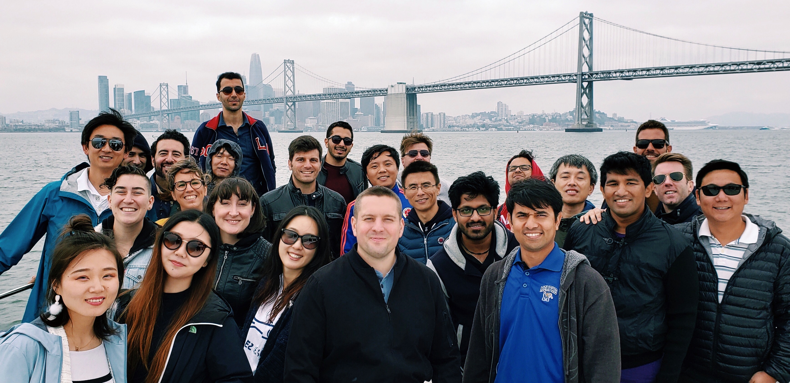

Samsung Research America
B2B Healthcare Innovation at the Digital Health Lab
(Protected by NDA)
In June 2018, I packed my bag and moved to the San Francisco Bay Area for a 12-week internship at the Samsung Research America mountain view campus. I worked as a Product Designer Intern in the Digital Health Lab, managed by Giulio Pascoli and mentored by Namita Deshpande and Kyungmin Lee. Unfortunately, I cannot share the details of my work since it is still ongoing and is protected by a non-disclosure agreement, but you may find below an overview of our design process and how my work was structured.
TEAM
Giulio Pascoli, Namita Deshpande, Kyungmin Lee,
Han Gao, Qingrou Kira Sun
MY ROLE
UX Researcher, Interaction Designer
METHODS
User Interview, Focus Group,
Persona, Use Case Scenarios
DURATION
Jun 2018 - Aug 2018
(project ongoing)
Design Process

My Takeaways
These are some lessons I've learned throughout my internship at Samsung, from daily practice to high-level design strategy, that I wanted to share with you :)
1. Talk through your Design Rationale
Over the course of the summer, part of my day-to-day work was sharing my ideas and designs with the team during design review meetings. In fact, I found out that being able to cogently articulate your design decisions is one of the most important skills for a designer, besides the ability to execute design to the pixel level. That way, you can be more confident when walking people through your design rationale, even to those who do not speak the same "language" with you.
2. Find the Balance in Making Assumptions
One of the challenges I encountered during the internship is to find the right balance in making design assumptions. I always wanted to make sure any inferences or decisions I made are valid and well-grounded in research findings. However, I found out in many cases, it's impossible to validate everything with users and researches and I had to make some assumptions here and there. Making some reasonable assumptions should help in the design process, but making too many assumptions may also deviate the solutions. Finding the right level of balance between the two becomes rather important.
3. Be Agile and Prioritize your Design
Project can go big. There are always more features to explore and to expand upon. However, depending on the project scope and timeline, it's important to prioritize features and define the level of details in different phases of design. This also leaves the room for user testing along the process by iterating rapidly in smaller increments.
4. Be Comfortable with Changes and Learn to Let Go
As you build and elaborate on your design for some time, it's easy to get attached and be defensive to suggestions and critiques. Learning to adapt to changes and embrace more opportunities actually help you come up with better design decisions and eventually help the product grow. One thing we always do is to ask questions and discuss potential use cases with our co-workers, before we dive too far in one direction.
